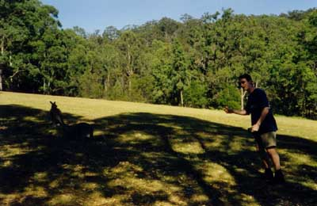
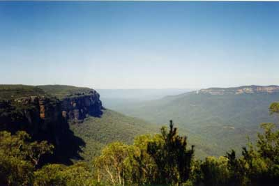
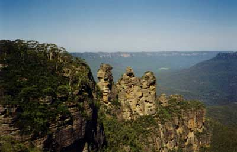
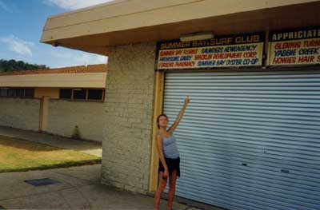

| Obligatory shot with kangaroos, albeit very hungover |  |
|  | Wicked indeed - the huge Blue Mountains area |
| The Three Sisters, named so after some aboriginal legend. I forgot it. |  |
|
Me and Brad having one of those discussions that they have at the top at the beach run, on Palm Beach, aka Summer Bay out of Home and Away |
| Bec doing her thang at Summer Bay |  |